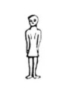

Rune Grimoire
Isaz
Modern Relevance
Isa, the rune of ice, represents standstill or immobility. It indicates delays, postponements, or a feeling of being frozen. Isa advises slowing down or stopping current activities.
Tree, Element, and Deity
Tree: alder
Element: ice
Deity: Verdandi
Meaning: icicle
Names Across Dialects
| Dialect | Word | Meaning |
|---|---|---|
| Proto-Germanic | isa | Ice |
| Gothic | eis | Ice |
| Old English | is | Ice |
| Old Norse | íss | Ice |
| Icelandic | Íss | Ice |
| Norwegian | Is | Ice |
Phonetic value: i
Esoteric interpretation: primal matter/antimatter
Ideographic interpretation: the icicle, or the primal ice stream/wave out of Niflheimr
Cosmological Lore
The I-rune is the antipolar force to Fehu. Isa is world ice that flows forth from Niflheimr. It does not represent matter, but rather a concept of antimatter, which, when combined with the energy flowing from Muspellsheimr, leads to the formation of what we call "matter" (Midhgardhr). Isa may be equated in some cases with the prima materia of other philosophies. In many ways this mystery may be symbolized by the "black hole."
Gravity, Inertia, and the Rime-Giants
The I-rune is the force of attraction, gravity, inertia, and entropy in the multiverse. In mythology, aspects of this force are represented by the rime-giants (hrimthursar). Isa is a stillness and lack of vibration, a unique mystery in the Germanic cosmogony. This concept is as metaphysical as that which is called "spirit."
Ice and fire are the forces through which the world is created, but they are also the forces that will bring existence to an end.
The Ego and the Bridge Between Worlds
Isa is a symbol for the individual ego because of its centralizing and concentrating effect. It is a force that holds the ego-self together during the stressful trials of the initiation process, and as such it serves as a bridge between the worlds and over waters.
Rune Character
Isa is a rune of binding. It represents stealth and sneakiness and is used in operations where one wishes to proceed undetected; Iss bestows invisibility. In nature, ice creeps up on the land, quietly freezing and immobilizing everything in its path. The unaware fall victim to it. Magickally, Iss is a rune of binding and preventing action through hidden means. It can halt a plan and prevent something from developing. It is used to conceal and can render a victim unaware of impending personal disaster to where any actions attempted will be too late in coming. Isa freezes action and is the rune of cold, barren stillness, and death. Isa is the exact opposite of Fehu: as Fehu is a rune of movement, Isa is a rune of binding.
Often used in revenge spells and defense, it helps focus the will of the operator. Used with other runes, it acts to bind and shield the energies and keep them from interacting with each other.
Keywords
- World ice
- Antimatter
- Concentration
- Ego
Galdr
isa isa isa
iiiiisssss
sssssiiiii
Stadha
I. Stand erect with arms tight against the sides.
II. Stand erect with arms straight overhead, palms touching one another.

Magickal Workings
- Development of concentration and will
- Constriction, halting of unwanted dynamic forces
- Basic ego integration within a balanced multiversal system
- Power of control and constraint over other wights
- Bestows invisibility and stealth
- Preventing action through hidden means
- Revenge spells and defense
Constructive Applications
Helpful in void meditation as it acts to still the mind. Also helpful in concentration, bringing calmness and guidance. Works to calm hysteria, hyperactivity, and restlessness. Helps focus the will of the operator. Can prevent or stop movement, both that of growth and disintegration.
Baneful Applications
Used in ritual against another, it brings barrenness, prevents prosperity, causes depression, and serves as an obstacle to action. Can be used to cause paralyzing fear or obsession. Renders a victim unaware of impending personal disaster. Halts plans and prevents development. Can ruin planned activity. Used with other runes, it acts to bind and shield the energies and keep them from interacting with each other.
Stadhagaldr Rites
Increase in Magickal Power
Isaz centers the vitki's awareness and control over the streams:
Self-knowing I steer myself and the streams.
See Stadhagaldr (Posture Magick) for the full rite.